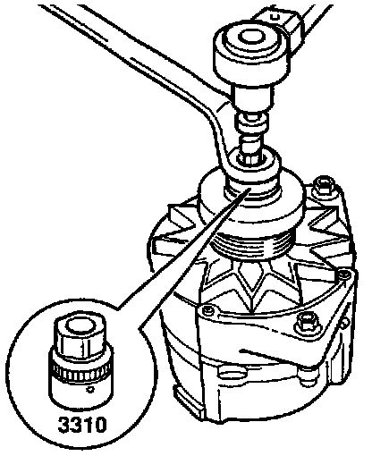

Alternator Pulley / Clutch: Service and Repair
Ribbed Belt (Generator) Pulley
Removing And Installing

- Remove and install Generator (GEN) V-belt pulley using special tool 3310.
- Tightening torque: 65 ± 5 Nm (48 ± 3 ft lb)
NOTE: Special tool 3310 is included in VW Special Tool Package AT-119 (USA) and AT 000 119 (Canada).